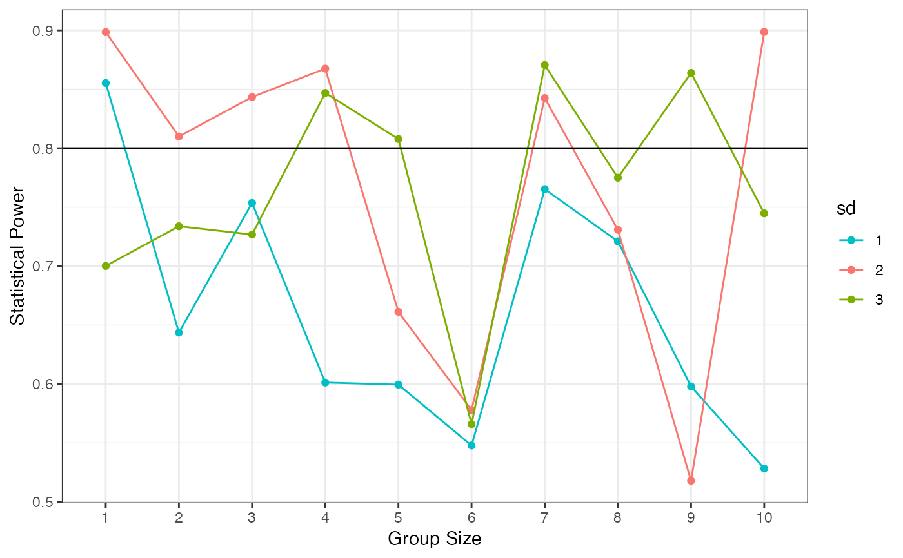
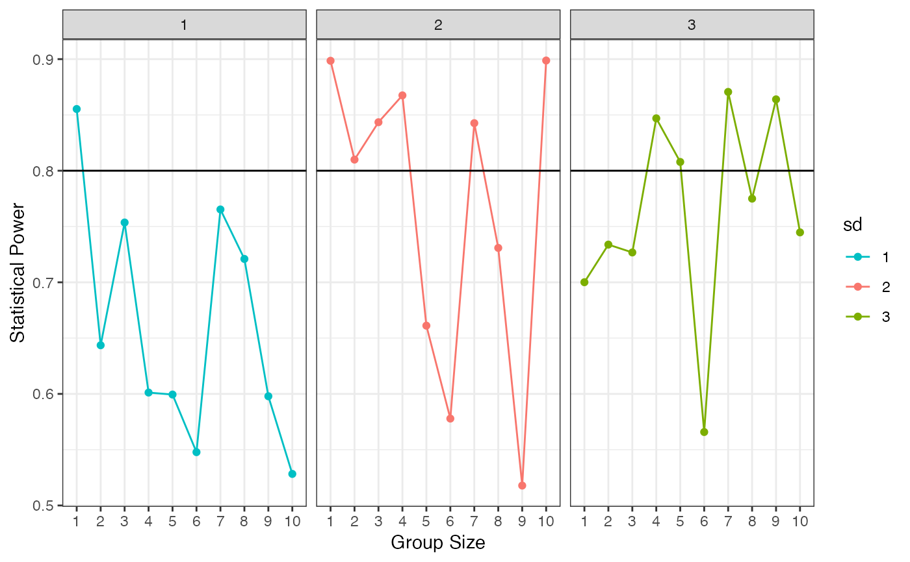

Plot simulated data for power against sample size, n
plot_pwr.RdCreates a visualization of statistical power versus sample size, with options for grouping and faceting. This function helps researchers determine adequate sample sizes for their experimental designs.
Arguments
- data
A dataframe with columns for sample size, power estimates, and grouping variables.
- colpal
Character vector of hexadecimal color values for the plot.
- n
The name of the sample size column in
data.- p.value
The name of the power estimate column in
data.- group
The name of the grouping variable column in
data(used for coloring).- facet
The name of the faceting variable in
data. Set to NULL for no faceting.
Examples
# Create example data
data <- data.frame(
n = rep(1:10, each = 3),
p.value = runif(30, 0.5, 0.9),
sd = rep(1:3, 10)
)
colpal <- c("#00BFC4", "#F8766D", "#7CAE00")
# Generate power plot with grouping but no faceting
plot_pwr(data, colpal, group = "sd", facet = NULL)

# Generate power plot with both grouping and faceting by the same variable
plot_pwr(data, colpal, group = "sd", facet = "sd")
